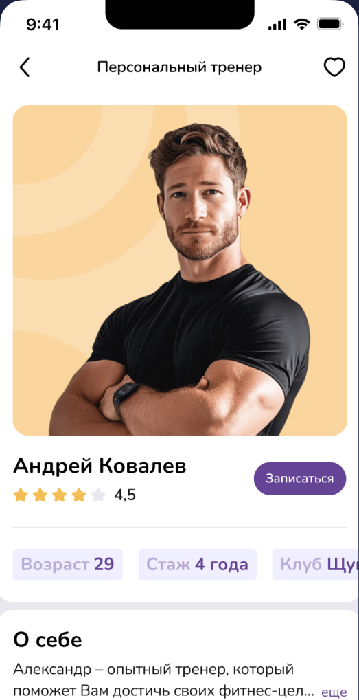

DDX Fitness — finding a trainer
Booking a trainer can take one tap. First, though, you need to know if they’re right for you. In this design exercise for DDX Fitness, I focused on that decision: connecting a client’s goal with a trainer they feel ready to trust.
The brief
The brief described a client who wants to train after work on weekdays at DDX Shchuka. She wants to lose weight and build muscle, with a trainer who can help with nutrition, technique, and following a plan.
The task was to design the booking flow and trainer profile using the existing UI. I started with a question: what does someone need to know before choosing a trainer?
Understanding doubts before booking
I ran a small survey with 10 participants. They named experience, specialization, and reviews as important factors. Personal considerations came up too: their impression of the trainer and a shared approach to exercise.
This shifted my focus from the booking button to trust. My hypothesis was that a profile should help people assess a trainer and understand what to expect from working with them.
Start with a goal
For people who don’t yet know whom to look for, I designed a guided flow around three goals: losing weight, building muscle, or staying in shape. Each option is a card with an image.
The flow leads to a list of trainers. I also kept a direct route to that list, so the questionnaire wouldn’t be mandatory for everyone.
Make inputs visual
Each measurement gets its own screen. Height uses a vertical scale beside a human figure; weight uses a horizontal one. A large number shows the current value, with a button at the bottom to continue.
This turns the form into a sequence of short actions. After the questions, the prototype transitions into a search for suitable trainers.

Help people assess a trainer
The profile brings together experience, rating, club, and a short introduction. I placed the booking button beside the main information and planned space for photos and client results to support the decision.
I wanted to show the person behind the card. From the profile, the flow continues to booking and choosing a date and time.

The outcome
In three days, I created 26 screens and an interactive prototype. The flow centers on matching by goal and a profile that helps people decide whether to book.
Motivational notifications, a separate services list, and a detailed progress widget were outside this version’s scope. The effect on bookings and revenue still needs testing: these were target metrics, not measured results.